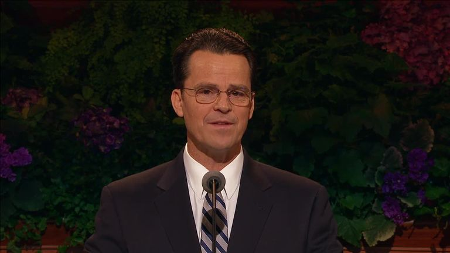
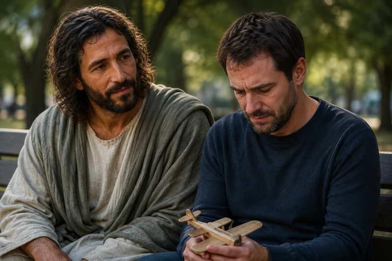
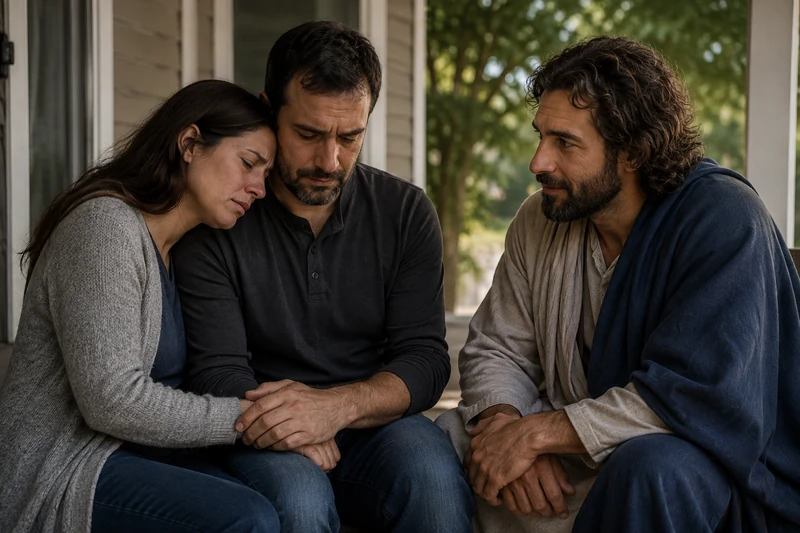
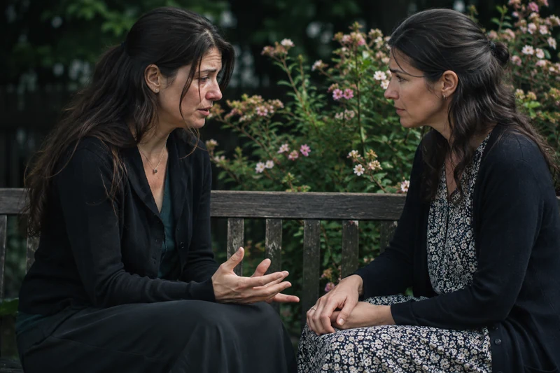

General conference video and text
Because I Live, Ye Shall Live Also
The Church of Jesus Christ of Latter-day Saints · October 2012
Study Jesus Christ · Death of a Child
Finding Hope After the Death of a Child
ContinueIf you are grieving a child, we are sorry for your loss. No short answer can hold everything your child means to you. Here you can read about the Savior's compassion and the scriptural promises concerning little children, with room for sorrow and questions that remain.
Watch and study
In Because I Live, Ye Shall Live Also, Elder Shayne M. Bowen speaks directly to parents who have lost a child. He describes the death of his infant son and his own sorrow, guilt, and eventual hope in Jesus Christ. The account includes details of the death. You can choose the transcript, skip those details, or leave the message for another day.

General conference video and text
The Church of Jesus Christ of Latter-day Saints · October 2012
He also recalls teaching Moroni 8 to a mother grieving a child who died without baptism. Read that passage with the study below: the teaching about little children addresses Christ's mercy and salvation. It does not supply an explanation for your own child's death.
Elder Bowen distinguishes his experience from what his wife felt and describes love that continued after loss. His account is one father's testimony. You do not need to experience the same feelings, draw the same personal conclusions, or follow the same course of grieving to be welcome here.

Study illustration
Symbolic devotional artwork about the Savior’s compassion, not a recorded encounter or a promise about how grief should feel. The surrounding study offers room for sorrow and hope.
Moroni 8:8-12, 19 teaches that little children are alive in Christ through His mercy and do not need baptism or repentance. Their salvation is not lost because they died without baptism.
Doctrine and Covenants 137:10 teaches that children who die before the age of accountability are saved in the celestial kingdom. The promise concerns their salvation; it does not explain why a child died or ask a family to feel less sorrow.
A parent's love does not end at a particular birthday. If your child was a teenager or adult, the verses about little children do not directly answer every question you may have about their eternal future. Doctrine and Covenants 137:7-9 also teaches that God considers people's works and the desires of their hearts. You do not have to settle your child's eternal future yourself. These verses invite trust in God's judgment, which takes account of more than any of us can see.
Alma 7:11-13 describes the Savior bearing pains, sicknesses, and infirmities so He would know how to help His people. This teaching offers a foundation for turning toward Him with sorrow as well as trust.
These promises need not become a demand to feel better immediately. You can bring a prayer of gratitude, a question, or simply the words that today is hard. You do not need to meet a timetable for grief or accept an explanation for the death that these scriptures do not give.
Consider asking what would help this week: a meal, an errand, quiet company, or space. Let the family lead when speaking about their child. Avoid making the death into a lesson they are expected to accept. Offer help you can follow through on, and ask before sharing their story with others.

Study illustration
Symbolic devotional artwork, not a recorded encounter. It reflects the study’s focus on compassion and companionship without prescribing a timetable for grief.
In John 11:17-36, Martha speaks to Jesus about her brother's death, and Jesus later weeps with those who are grieving. The account holds His promise of resurrection alongside real sorrow. As you read, notice that the people He loves are able to speak their hurt aloud.
This story does not promise that a family's loss will be reversed in this life. It offers a way to think about compassion: being present with someone matters, even when you cannot explain what happened.
Watch and study

Study illustration
A contemporary illustration of listening after loss. Family members may express grief differently; patient attention can make room for what each person needs to say.
In The Grave Has No Victory, Sister Reyna I. Aburto remembers losing her older brother in an earthquake when she was nine. She describes the questions and longing she carried and how she later understood her hope through Jesus Christ's Resurrection. Her message may be meaningful when a family is also trying to understand the sorrow of surviving siblings.
General conference video and text
The Church of Jesus Christ of Latter-day Saints · April 2021
She places her memories alongside Mary Magdalene's grief and witness of the risen Savior. As you read, allow both parts of the message to stand: missing someone deeply and believing in resurrection. Her remembered experience does not prescribe what another child should imagine or feel.
The Church's Grief and Loss guidance encourages listening and continued support. A surviving sibling may want to talk, remember quietly, or return to ordinary activities. Ask what would help, and seek qualified support when needed.
If welcome, ask whether someone would like to share a memory, look at a photograph, or have quiet company. There is no required activity or public expression. Adults can make room for different responses without asking children to reassure them or explain the loss.
The passages about little children above address salvation and Christ's mercy. The account of Lazarus addresses sorrow and the Savior's power over death. They do not explain the cause of a particular loss. Keeping those distinctions can protect a grieving family from explanations that scripture itself does not give.
The companion artworks show both an individual father and parents together. As an invitation for reflection, consider that shared loss does not require identical words, feelings, or ways of remembering. You might ask whether the person beside you wants company, conversation, or quiet, and be willing to hear a different answer tomorrow.
Study illustration
A contemporary illustration of practical care. Ask which errand or ordinary task would help, and let the family guide your offer.
If it feels welcome, a family might keep a photograph, tell a story, or mark a meaningful day in a way that honors their child. There is no obligation to make grief public or to turn remembrance into a testimony for others. Friends can ask permission before offering a memorial gesture or sharing a story.
Choose one of the short passages already linked, or simply read the opening paragraph. You do not need to finish the study. The resources remain here for another day, and seeking company or practical support may be the more useful next step.
Would it help to be heard, to rest, to remember my child, or to ask someone for a specific kind of support? I do not need to resolve every question today.
Read one of the passages above slowly. What does it actually teach, and what questions does it leave unanswered? Allow both to be part of honest prayer.
Study illustration
An illustrative empty tomb, not an identified historical site. It accompanies the study of resurrection through Christ and offers no explanation for a particular child’s death.
Study the broader teaching without requiring yourself to feel comfort immediately.
Consider spiritual hope and practical help together; there is no deadline to continue.
{kind=link}